Presentación del Vehículo
Lanzamiento del nuevo prototipo con motor turboalimentado.
Innovación • Ingeniería • Competencia

Somos un equipo estudiantil dedicado al diseño y construcción de vehículos todo terreno, formado por jóvenes ingenieros apasionados por la innovación y la excelencia técnica. Nuestra misión es crear prototipos competitivos que representen el talento mexicano en torneos nacionales e internacionales, destacando por nuestro compromiso, trabajo en equipo y espíritu de superación. Con múltiples campeonatos en Baja SAE México, seguimos demostrando que la ingeniería y la pasión pueden llevarnos a lo más alto.

Capitán

Líder de Administración

Responsable de Recursos materiales

Responsable de vinculación

Recluta de Recursos materiales

Recluta de redes sociales

Líder de Chasís y Ergonomía

Responsable de Chasís

Recluta de Chasís

Responsable de Ergonomía y Presidente

Recluta de Ergonomía

Líder de Telemetría

Responsable de Telemetría

Recluta de Telemetría

Líder de Suspensión, dirección & frenos

Responsable de suspensión

Responsable de dirección

Responsable de frenos

Recluta de Suspensión

Recluta de frenos

Líder de Manufactura

Responsable de Manufactura

Recluta de Manufactura

Líder de PowerTrain

Responsable de CVT

Responsable de PT delantero

Responsable de powertrain trasero

Recluta de PowerTrain trasero RWD

Responsable de PowerTrain delantero FWD

Responsable de CVT
Más de 20 años de innovación y competencia
Lanzamiento del nuevo prototipo con motor turboalimentado.
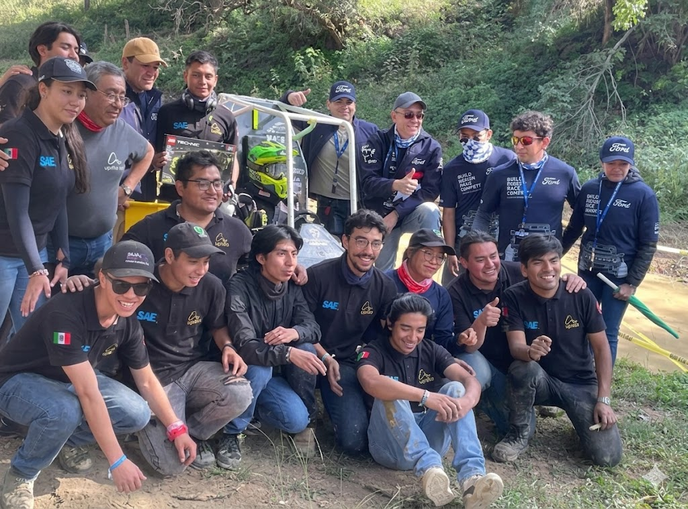
Lanzamiento del nuevo prototipo con motor turboalimentado.
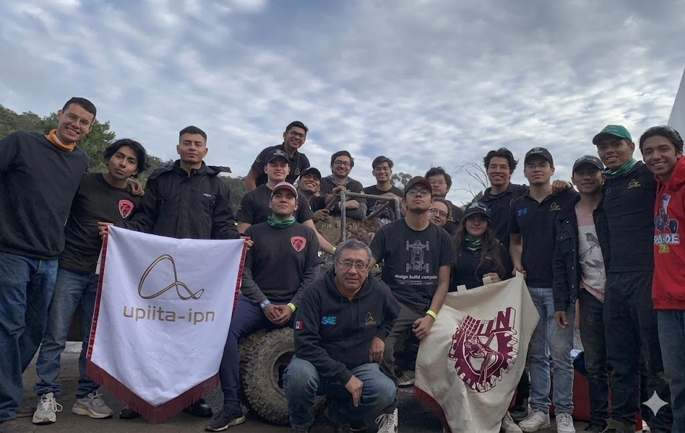
Lanzamiento del nuevo prototipo con motor turboalimentado y suspensión independiente
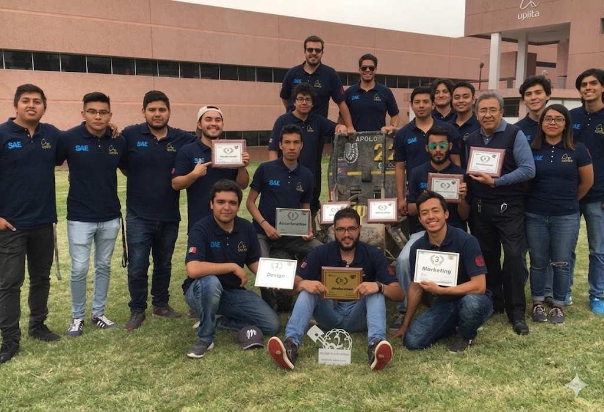
Lanzamiento del nuevo prototipo con motor turboalimentado y suspensión independiente.
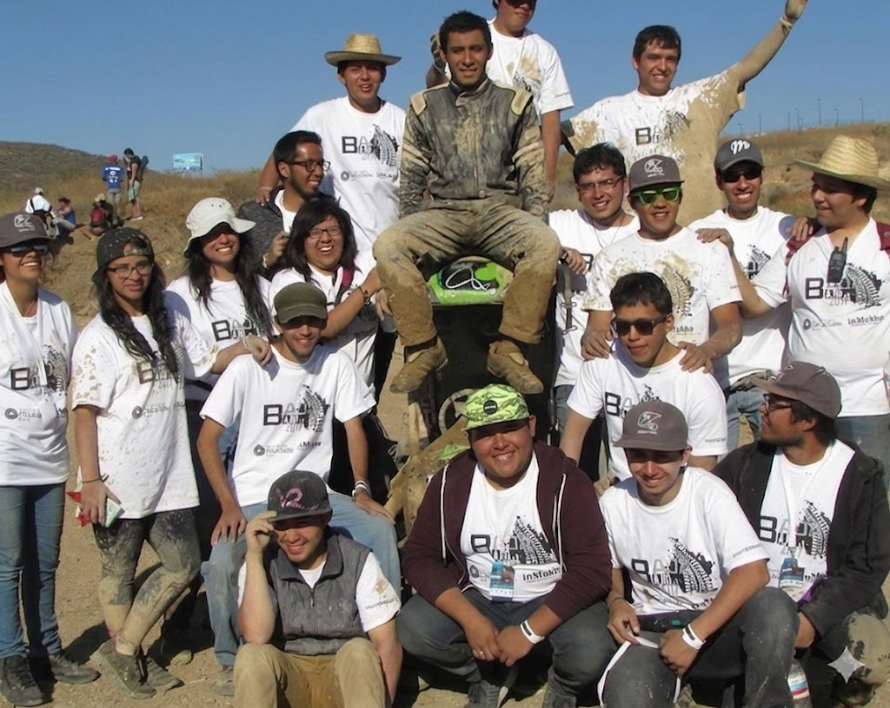
Lanzamiento del nuevo prototipo con motor turboalimentado y suspensión independiente.
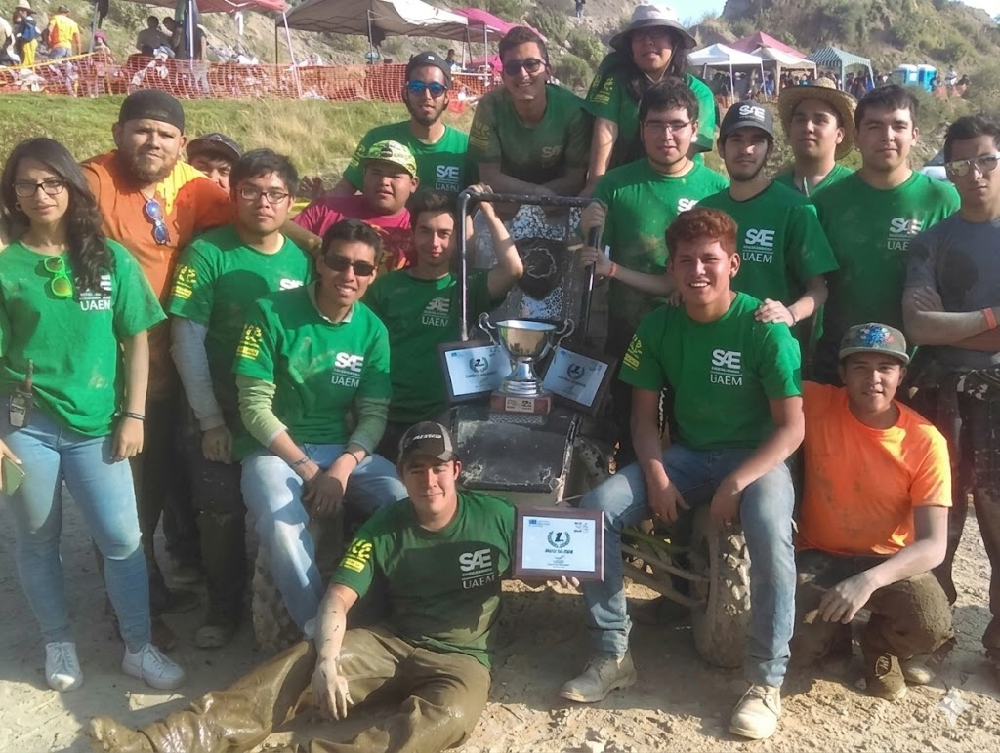
Primera competencia post-pandemia con 12 nuevos integrantes.
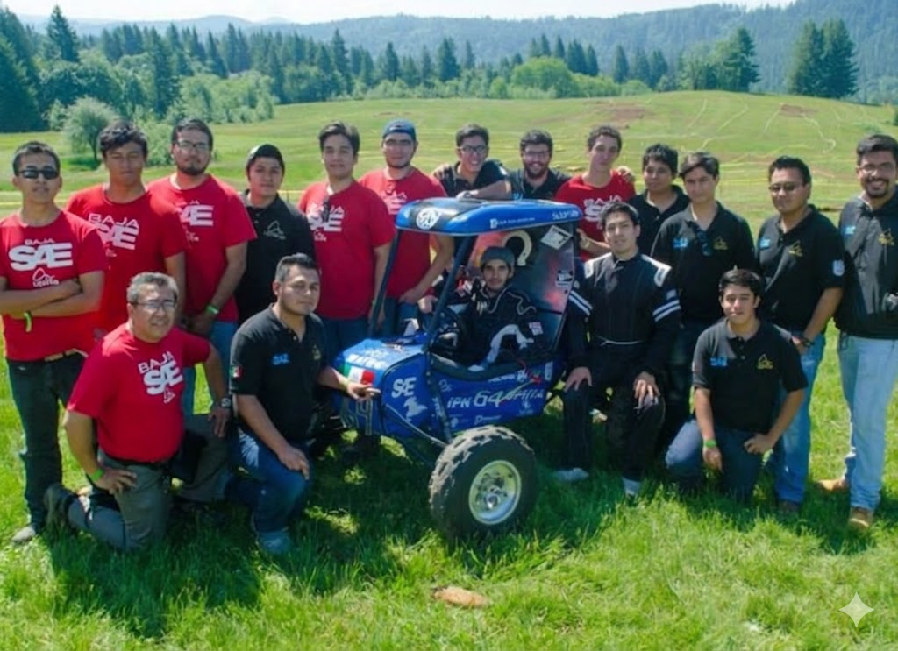
Adaptación a formato virtual por pandemia. Diseño remoto y simulaciones avanzadas.
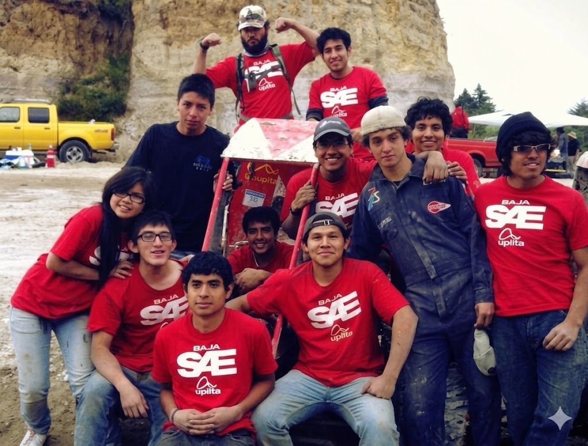
Récord de velocidad en aceleración: 4.2 segundos de 0-100m.
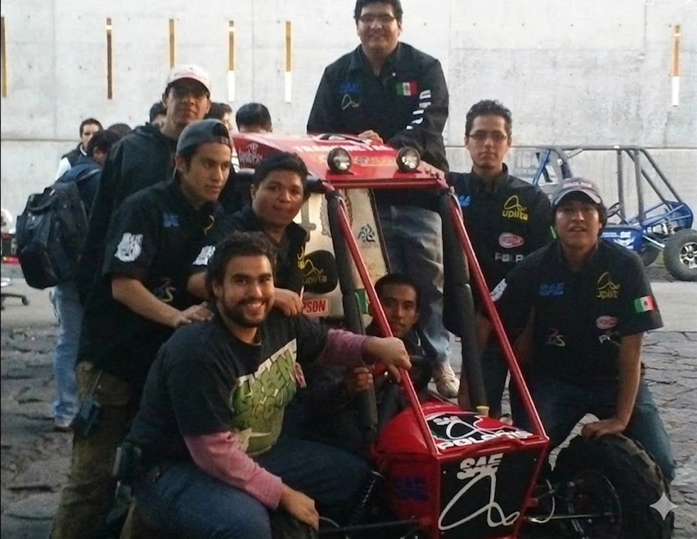
Expansión a 20 integrantes y nuevas instalaciones en el taller.
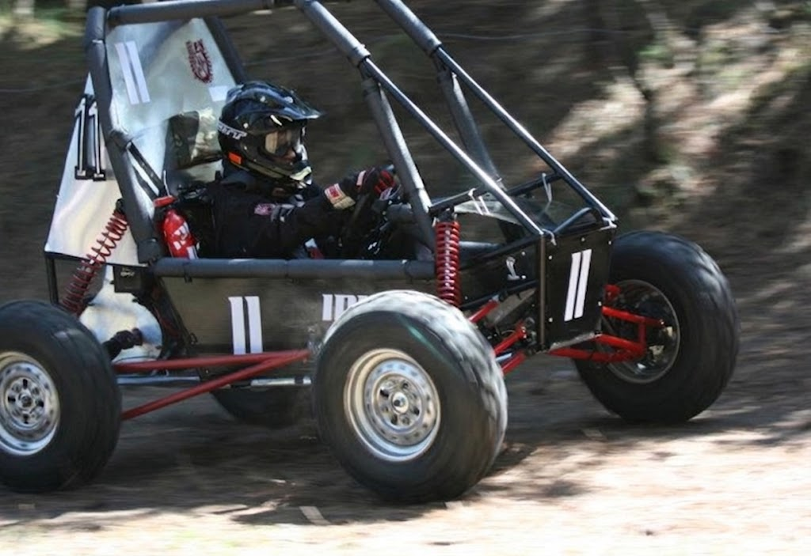
Primera vez compitiendo a nivel internacional en Oregon, USA.
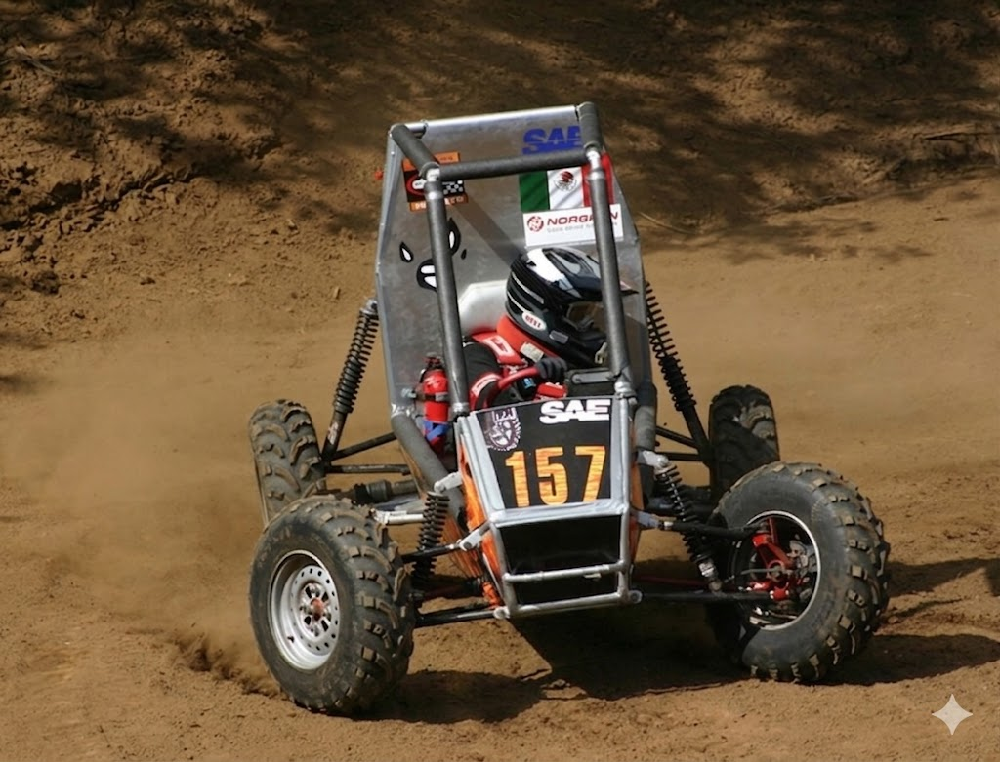
Implementación de frenos de disco ventilados y sistema de telemetría.
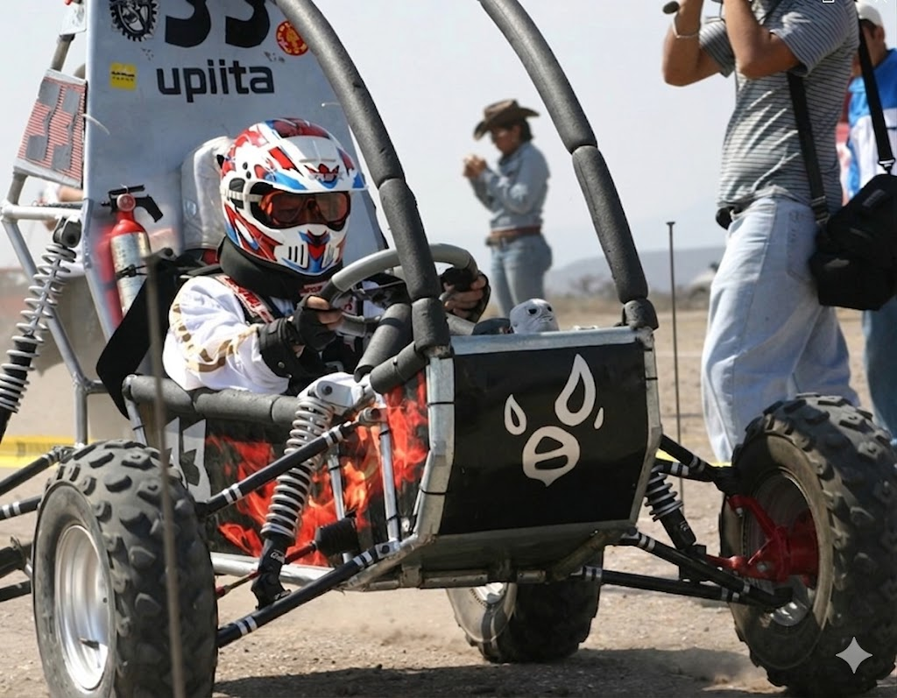
Inicio de la década con 14 integrantes y primer patrocinio importante.
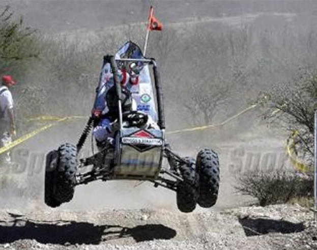
Expansión del equipo a 17 integrantes y mejora de instalaciones.
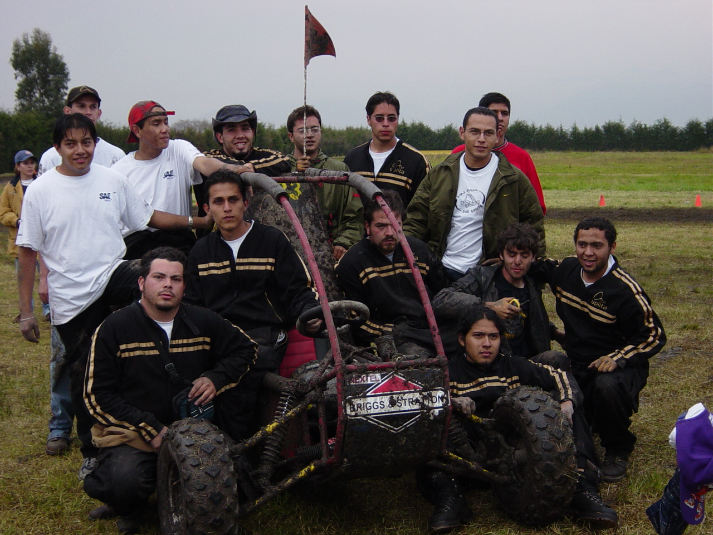
Primera participación oficial en competencia universitaria.
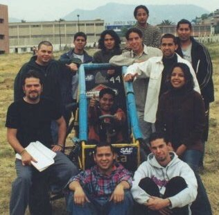
Nace la escudería con 12 estudiantes visionarios y un sueño: competir a nivel internacional.
¿Tienes preguntas? ¡Estamos aquí para ayudarte!
oracing.upiita@ipn.mx
Unidad Profesional Interdisciplinaria en Ingeniería y Tecnologías Avanzadas IPN
CDMX